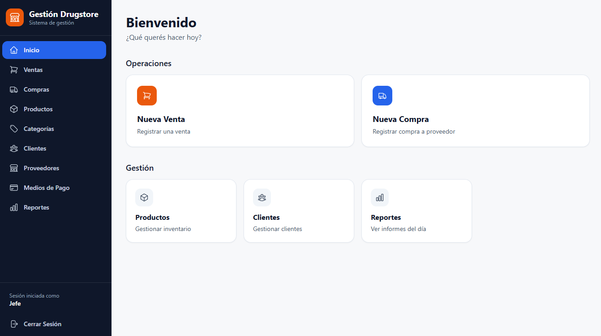

Proyecto destacado
Sistema de gestión para Drugstore
Aplicación web para administrar inventario, ventas, compras, clientes, proveedores y reportes.

Aspectos técnicos destacados
- Arquitectura por capas
- Transacciones para ventas, compras y stock
- Autenticación JWT y autorización por roles
Tecnologías: Python · FastAPI · PostgreSQL · SQLAlchemy · Next.js